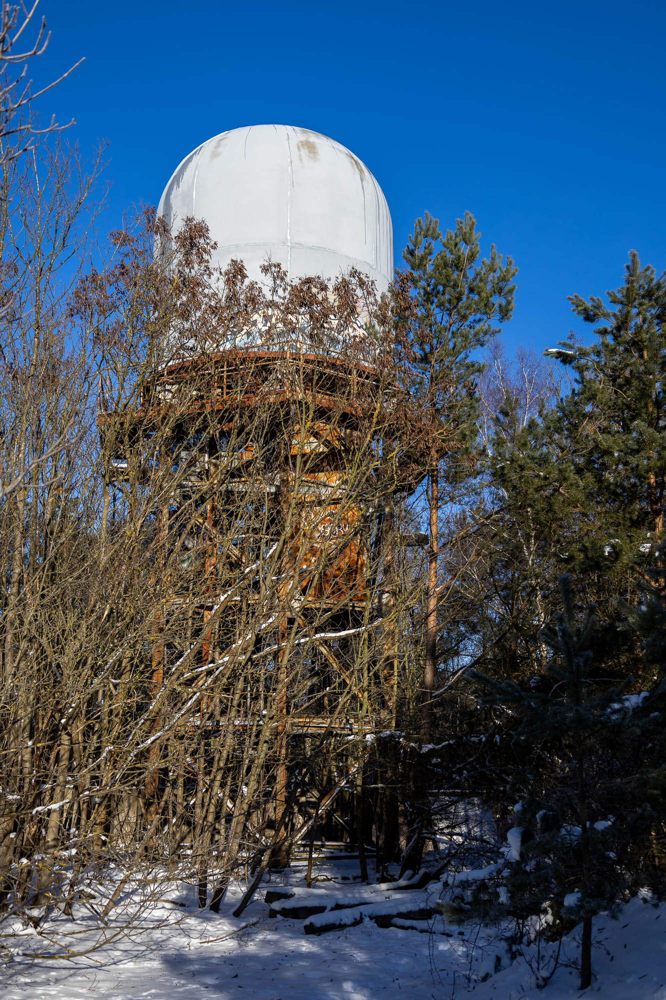
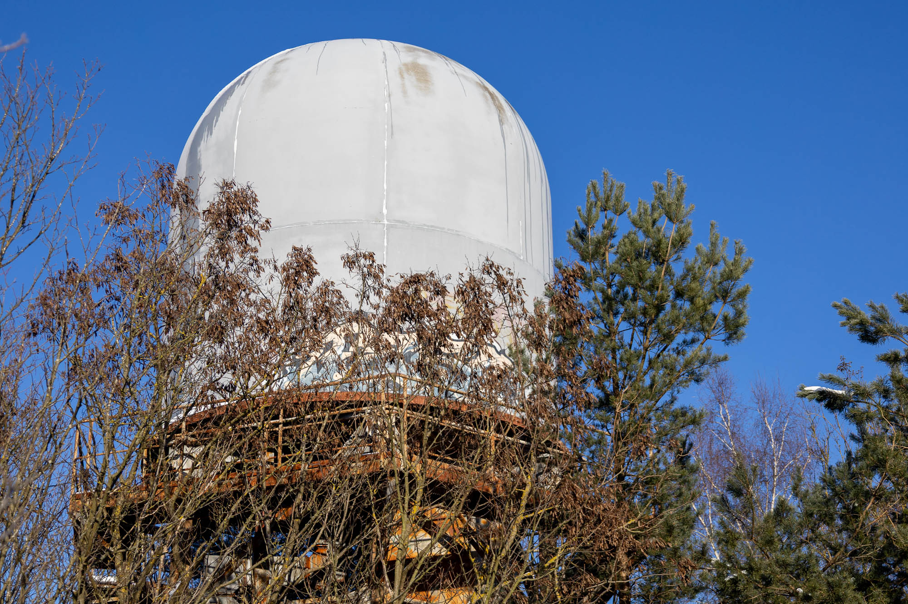
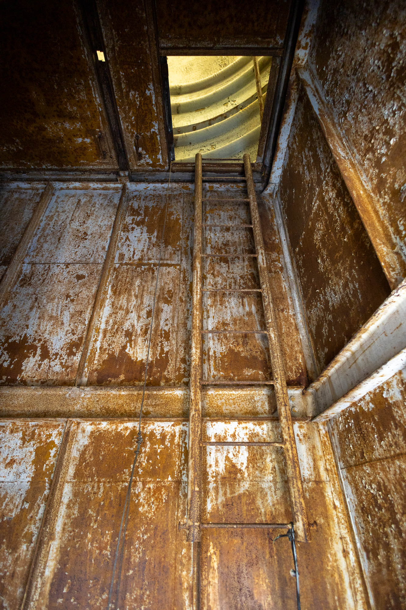
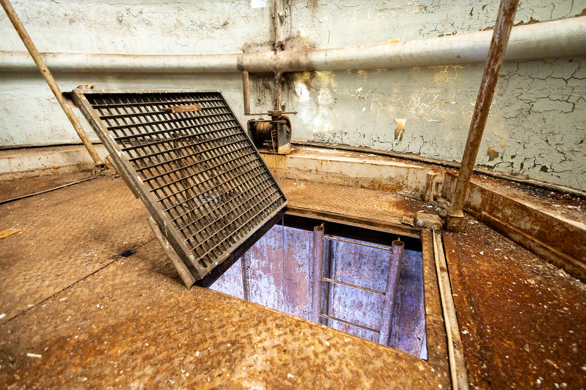
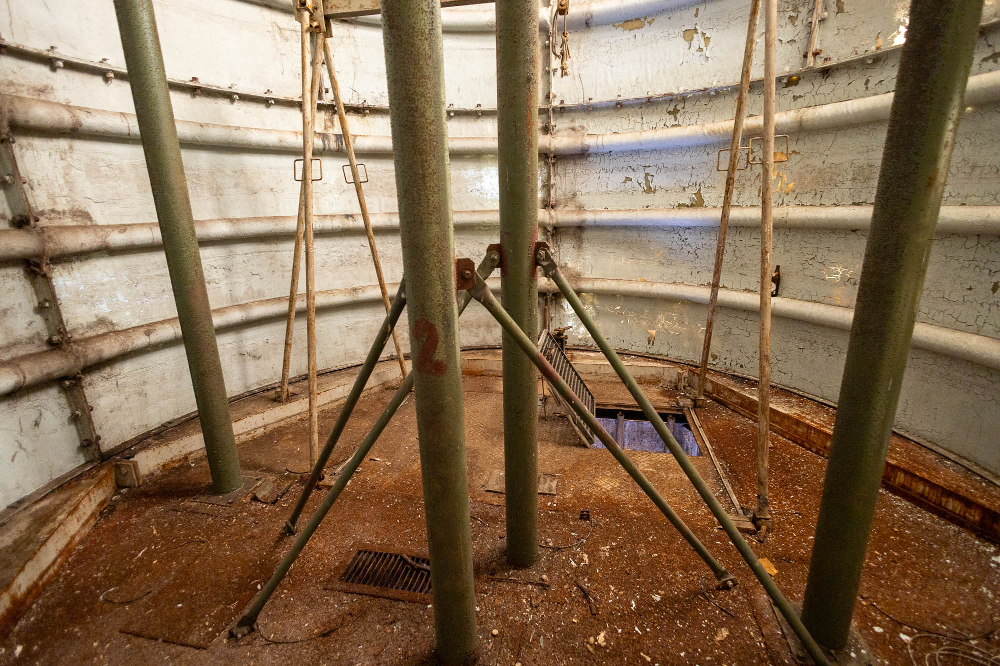
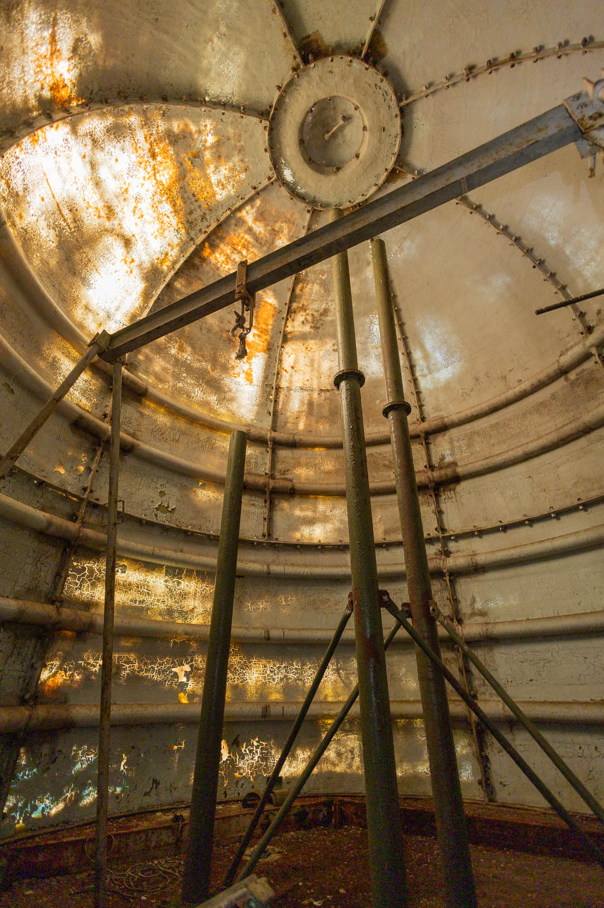
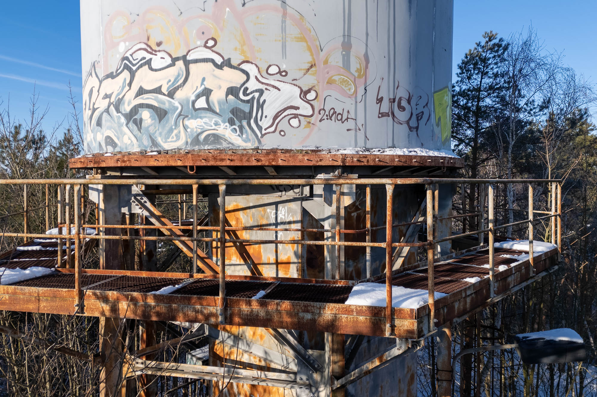
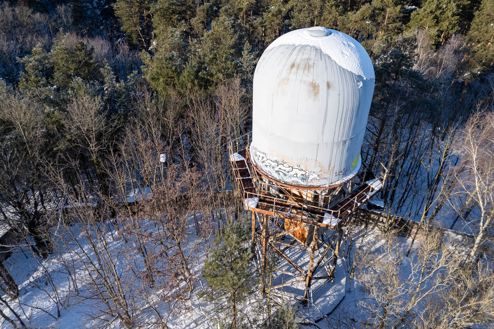
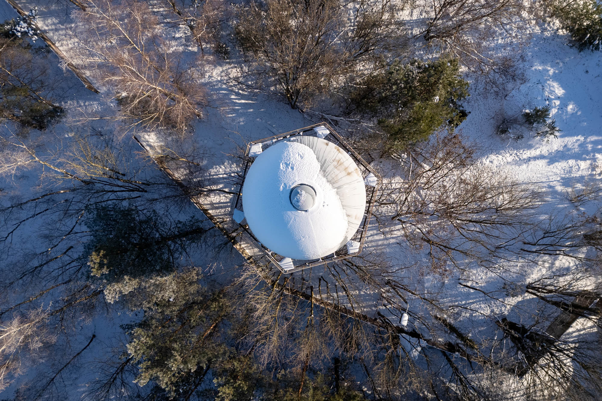

Perched on a small hill within a forest of the former East Germany lies an abandoned Stasi compound. Once used to tap fibre-optic cables running into West Berlin and eavesdrop on encrypted radio communications, it now exists only as a relic entirely severed from modern Germany.

While the broader complex comprises numerous buildings, bunkers, and a garage, my primary focus was the decommissioned communications tower. Its snow-covered dome remains prominent above the treeline, a landmark that three decades of forest growth since the fall of the Berlin Wall has failed to obscure.


Accessing the inside of the dome was easy thanks to a few old rusty ladders.
While the snow quieted all outside noises, every sound I made inside was amplified by the hollow metal rooms and the dome's acoustics.



Today, only a framework of pipes and supports remains. Historically, however, this dome served as a primary intercept point for radio signals passing between the enclave of West Berlin and West Germany, across the divide of the GDR.
The complex, including several dilapidated structures not pictured here, was codenamed "Quelle 1" (Source 1). Its primary function was to intercept light pulses within the fibre-optic cables spanning the 250-kilometre corridor from West Germany. This capability granted the Stasi and Soviet intelligence total oversight of digital communications on these lines during the final years preceding the fall of the Berlin Wall and German reunification.


The whole site, with its many abandoned buildings and the dome tower, feels stuck in the past. Its remoteness keeps it away from the public eye and its typical GDR concrete perimeter walls keep many of the few visitors away. Only the remaining few that jump the fence still keep the memory of this place alive.
